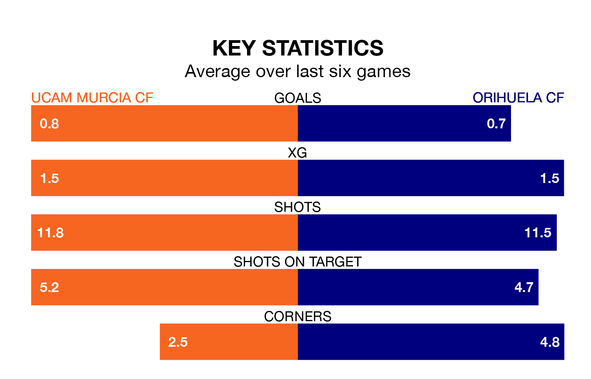

UCAM Murcia CF host Orihuela CF on Sunday at Estadio de La Condomina in Segunda División RFEF Group 4.
In their last league match, on January 21, UCAM Murcia beat CD El Palo 2-0 away.
Orihuela lost, 2-0 at home against Vélez.
With 21 goals in 19 games so far this season, UCAM Murcia are scoring more than average in the league with 1.1 goals per game. But they are conceding more than average too, letting in 20 goals at a rate of 1.1 per game.
Orihuela, meanwhile, are below average scorers, with 0.9 goals per game, compared to a league average of 1.0. They have conceded 1.4 goals per game.
The visitors are 12th in the table after 19 games, of which they have won six and drawn five, earning 23 points.
The home team are three places ahead of Orihuela in ninth, with eight wins and three draws putting them on 27 points.
UCAM Murcia are in mixed form in Segunda División RFEF Group 4, with two wins and a draw from their last six games.
And also with two wins and a draw over that period, Orihuela's form is identical – they have both taken seven points from 18.
Updated: 09:07 (UTC), 24/01/24